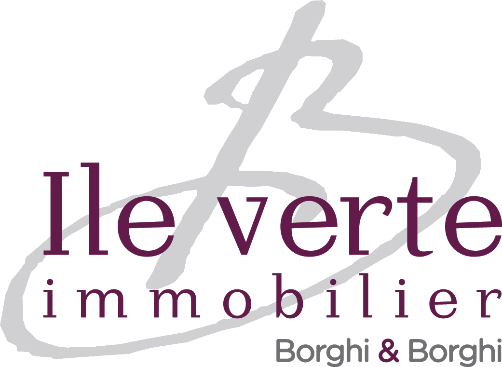

Mario JODAR
Compétences multidisciplinaires entre expertise métier, gestion de données & développement d'applications numériques.
Compétences multidisciplinaires entre expertise métier, gestion de données & développement d'applications numériques.
"Passionné par l’informatique, j'occupe une grande partie de mon temps libre à coder et à la pratique du karaté - un art martial qui renforce ma rigueur et ma persévérance ; des qualités disciplinaires que j'applique pleinement à mes projets professionnels."
Expérience construite au contact du terrain, puis affinée dans l'analyse et le pilotage de données. Mon atout : transformer des exigences métiers complexes en solutions numériques pragmatiques et durables.

Gestion complète des dossiers immobiliers, de la prise de contact jusqu’à la signature, en gestion locative comme en transaction.
Objectifs de formation :
Développement de divers projets et solutions concrètes : applications web, automatisation, gestion de données et outils métiers.
En charge du suivi administratif, technique et relationnel d’un patrimoine immobilier.
Gestion, contrôle et valorisation des données patrimoniales.
Applications web, outils personnels et projets orientés données.
Accéder au portfolioDisponible pour échanger autour de projets numériques, de données ou d'applications métiers.